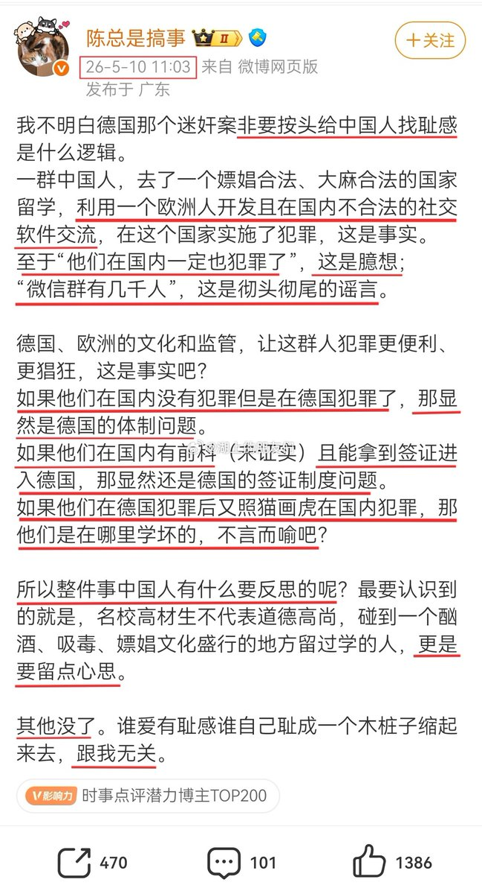

我要开始化用支那逻辑了🙂：
我不明白那个南京大屠杀非要按头给日本人找耻感是什么逻辑，如果他们在国内没有杀人但是在中国杀人了，那显然是中国的体制问题。如果他们在国内有前科（未证实）且能被允许进入中国，那显然还是中国政府履职不严。
如果他们在中国犯罪后又照猫画虎在日本犯罪，那他们是在哪里学坏的，不言而喻吧？
所以整件事日本人有什么要反思的呢？最要认识到的就是，加入帝国皇军不代表道德高尚，碰到一个在酗酒、吸毒、嫖娼文化盛行的地方待过的人，更是要留点心思。

我不明白那个南京大屠杀非要按头给日本人找耻感是什么逻辑，如果他们在国内没有杀人但是在中国杀人了，那显然是中国的体制问题。如果他们在国内有前科（未证实）且能被允许进入中国，那显然还是中国政府履职不严。
如果他们在中国犯罪后又照猫画虎在日本犯罪，那他们是在哪里学坏的，不言而喻吧？
所以整件事日本人有什么要反思的呢？最要认识到的就是，加入帝国皇军不代表道德高尚，碰到一个在酗酒、吸毒、嫖娼文化盛行的地方待过的人，更是要留点心思。

5月10日，一名博主发文：“我不明白德国那个迷奸案非要按头给中国人找耻感是什么逻辑”如果他们在国内没有犯罪但是在德国犯罪了，那显然是德国的体制问题。如果他们在国内有前科（未证实）且能拿到签证进入德国，那显然还是德国的签证制度问题。 https://t.co/XG8ILp83Q9 https://t.co/vG6IaA0Tp2